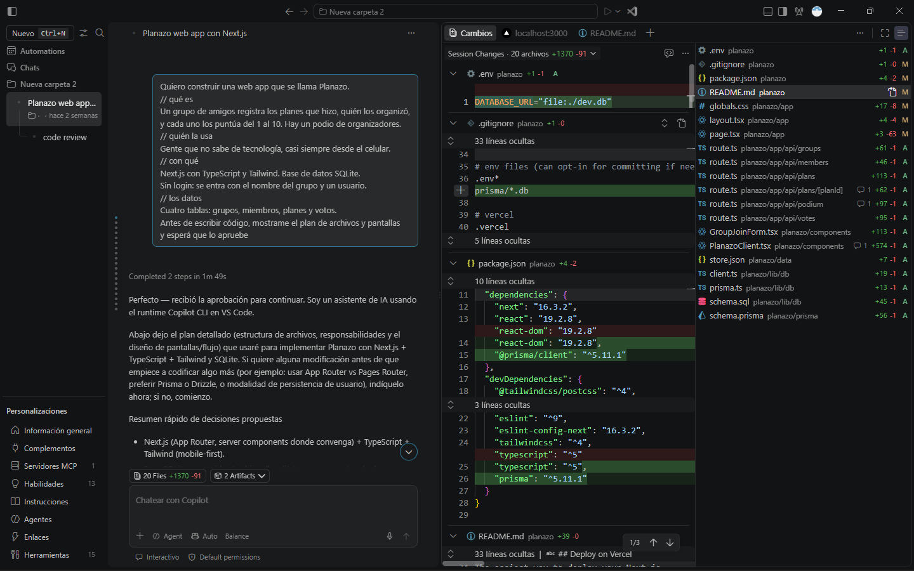
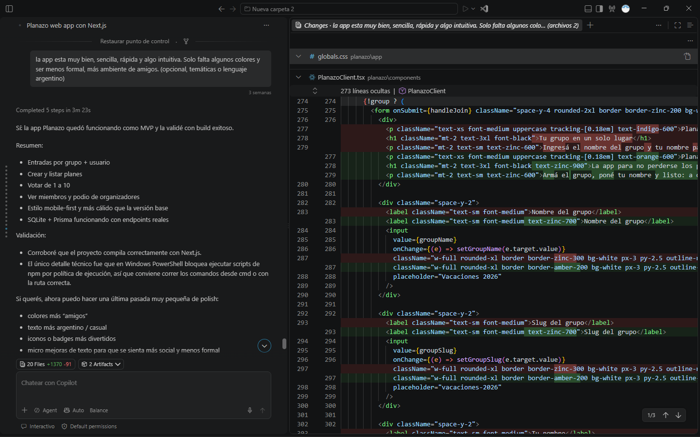

Prompt design
Redacto instrucciones claras y estructuradas para obtener resultados útiles, coherentes y alineados a la marca.
Prompt Writer / Web Developer
Soy un desarrollador web especializado en la utilización e implentación de IA para programar, automatizar tareas y crear contenido. Me interesa sacar el máximo potencial de la inteligencia artificial aplicándola a la creatividad y estrategia de marca.
Habilidades
Redacto instrucciones claras y estructuradas para obtener resultados útiles, coherentes y alineados a la marca.
Defino objetivos, tono, público y estructura para que la IA genere contenido con propósito y consistencia editorial.
Manejo maquetación web con HTML, CSS y SCSS, cuidando estructura, legibilidad y estilos visuales coherentes con la identidad digital.
Trabajo con control de versiones en Git, comprendo SEO básico y diseño interfaces adaptadas a móvil, tablet y escritorio para una mejor experiencia de usuario.
Proyecto personal
Desarrollé una aplicación de utilidad/organización y muy simple de usar, que permite a las personas crear planes y compartirlos con sus amigos. Mis promts fueron directos, claros, objetivos y bien pensados.



“Quiero construir una web app que se llama Planazo. Se trata de una aplicación para móviles que ayude a los usuarios a organizar planes de salida y actividades con los amigos. Está pensado para gente que no sabe de tecnología. Debe tener 4 tablas: grupos, miembros, planes y votos.”
“Ingresé a la app hay un error que no permite regresar a inicio, crea un nuevo botón de regreso. También debe ser más colorida e informal, con un ambiente de amigos. Utilizar un lenguaje y temáticas del público local objetivo, como Argentino.”
El modelo de IA generó una aplicación intuitiva, simple y útil cumpliendo instrucciones y el objetivo propuesto. Cualquier persona puede usarla desde su celular, sugerir y votar planes con sus amigos o familiares.